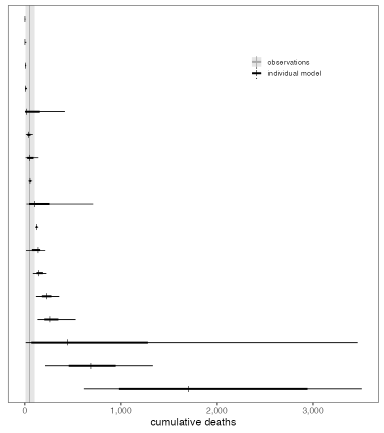

Aggregation and trimming on real-world COVID-19 death predictions
MMODS-vignette.RmdThis vignette implements the second case study from (Howerton et al., n.d.). We use predictions from a real-time multi-model effort to evaluate the efficacy of a stay-at-home intervention in a US county of approximately 100,000 individuals early in the COVID-19 pandemic (May-November 2020). In addition to predictions of cumulative deaths from 17 distinct models, we also retrospectively collected observed cumulative deaths over the same period in comparable US counties that implemented a stay-at-home order for the duration of the projection period. Details on the study can be found in (Shea et al. 2020), and raw data is available at https://github.com/MMODS-org/Elicitation-1.
To start, we load a few packages.
# for aggregation
library(CombineDistributions)
# for data manipulation
library(readr)
library(dplyr)
library(reshape2)
library(tidyr)
# for numerical integration
library(pracma)
# for speeding up aggregation calcs
require(doParallel)
require(foreach)
registerDoParallel(4)
# for plotting
library(ggplot2)
library(scales)
library(cowplot)First, we load the data (both individual model projections and post-hoc observations). These data are provided in the package.
# test if directories exists locally, if not create them
if (!dir.exists("../figures")){
dir.create("../figures")
}
if (!dir.exists("../data")){
dir.create("../data")
}
fig_path <- "../figures/"
data_path <- "../data/"
data_raw_path <- "../data-raw/" # contains scripts that write into data/ directory
# individual projections
if (!file.exists(paste0(data_path, "MMODS.rda"))){
source(paste0(data_raw_path, "MMODS.R"))
} else data(MMODS)
# observations
if (!file.exists(paste0(data_path, "MMODS_obs.rda"))){
source(paste0(data_raw_path, "MMODS_obs.R"))
} else data(MMODS_obs)
MMODS_obs <- MMODS_obs %>%
select(Population, cumu_deaths) %>%
mutate(obs_num = 1:n())We can plot the individual projections, sorted by median cumulative death projection.

Aggregating the projections
We can aggregate the individual projections using either averaging approach (LOP vs. Vincent). We will try both frameworks with all trimming alternatives (interior vs. exterior CDF trimming).
First, we define a data.frame with all possible
aggregation methods to try. We define the averaging method (LOP
vs. Vincent), method, the number of values to trim,
n_trim, and whether trimming should be interior or
exterior, int_ext.
# define methods to test
test_trim <- expand.grid(method = c("LOP", "vincent"),
n_trim = c(NA,1:16),
int_ext = c("interior", "exterior"))
test_trim$trim_type = paste("cdf", test_trim$int_ext, sep = "_")
# filter out duplicates (only trim even exterior and odd interior)
test_trim = test_trim %>%
mutate(rm_flag = ifelse((int_ext == "interior" & n_trim %% 2 == 0) |
(int_ext == "exterior" & n_trim %% 2 == 1), 1, 0)) %>%
filter(rm_flag == 0 | is.na(rm_flag)) %>%
dplyr::select(-rm_flag)Then, we implement the aggregation using each of these methods. To
aggregate a set of cdfs, we use the aggregate_cdfs()
function, where data is a data.frame containing all
projections, id_var is the name of the column that should
be aggregated across, method is "LOP" or
"vincent", ret_quantiles are the quantiles of
teh aggregate distribution to be returned, and
weighting_scheme and n_trim define the
weighting scheme.
# run all possible combinations
ret_quant <- seq(0,1, 0.01)
aggs <- foreach(i=1:nrow(test_trim)) %dopar% {
aggregate_cdfs(data = MMODS,
id_var = "id",
method = test_trim[i,"method"],
ret_quantiles = ret_quant,
weighting_scheme = ifelse(is.na(test_trim[i,"n_trim"]), "equal",
as.character(test_trim[i,"trim_type"])),
n_trim = test_trim[i,"n_trim"])
}
aggs <- do.call(rbind, aggs)
# create a column for each aggregation method specification
aggs <- aggs %>%
mutate(id = sort(rep(1:nrow(test_trim),length(ret_quant)))) %>%
left_join(test_trim %>% mutate(id = 1:nrow(test_trim))) %>%
# change NA n_trim (mean) to 0
mutate(n_trim = ifelse(is.na(n_trim), 0, n_trim))We can plot each of the aggregates.
Evaluating the predictions
Here we evaluate the performance of each aggregate distribution against the distribution of observed values.
Before evaluating performance, let’s do a quick check on our observations. Although population size is restricted to 90,000-110,000 individuals, it is not constant for all counties. So, to make sure population size isn’t confounding the observed number of cumulative deaths, we double check the correlation between the two.
To evaluate performance, we use four metrics:
Log score, defined as \[log Score=log(f(x))f\] where \(N\) is the number of observations, \(f(i)\) is the predicted probability density function and \(x\) is the observed value. Lower scores indicate better performance.
Continuous rank probability score (CRPS), defined as
\[CRPS(F,x)= \int_{-\infty}^\infty (F(y)-1\{y≥x\})^2 dy = \int_{-\infty}^xF(y)^2 dy+ \int_x^{\infty}(F(y)-1)^2 dy\] where \(1\{y≥x\}=1\) if \(y≥x\) and 0 otherwise. Distributions with the lowest CRPS values will be both calibrated (i.e., the observed value will fall in the center of the distribution) and sharp (i.e., concentrated around the observed value). Because the distributions being evaluated are defined empirically (rather than by a particular functional form), analytical evaluation of the CRPS is not possible. Instead, we approximate CRPS using \[CRPS(F,x)= E_F |X-x|-\frac{1}{2} E_F |X-X'|\] where \(E_F |X|\) represents the expectation of the absolute value of \(X\) with \(X ~ F(U1)\) and \(X' ~ F(U2)\) for \(U1, U2 \sim Uniform(0,1)\). We use 1,000 random uniform draws for each CRPS approximation.90% interval coverage is defined as \[Coverage: 90\% = \frac{|C_{90} |}{N} \text{ } for \text{ } C_{90}= {x∶F^{-1} (0.05)≤x ≤ F^{-1}(0.95)}\] where \(x\) is the observed value and \(F^{-1}\) is the predicted quantile function. We denote the cardinality (i.e., size) of some set, \(A\), with \(|A|\).
Kullback-Leibler information criterion (KLIC) is defined as
\[KLIC = \int_{-\infty}^\infty [log(o(y)) - log(f(y))]o(y) dy\] where \(o(y)\) is the probability distribution of observations and \(f(y)\) is the predicted probability density function. We approximate this integral numerically using the trapezoid rule. If distributions are not defined for a particular observation, we assume the values of \(o\) or \(f\) are very close to 0, specifically \(o(y)=10^{-5}\) and \(f(y)=10^{-5}\).
More details on each score can be found in Electronic Supplementary Material 1.4 of (Howerton et al., n.d.).
Here, we define a function to implement each of these metrics.
CRPS <- function(q,v,o,size=1000, rule=2, ties="ordered") {
set.seed(101) # set seed so using same uniform draws each time
x = approx(q,v,runif(size),rule=rule, ties=ties)
return(mean(abs(x$y-o[1])) -
1/2*mean(abs(x$y-approx(q,v,runif(size),rule=rule, ties=ties)$y)))
}
log_score <- function(dens_x,dens_y,o,rule=2, ties="ordered"){
#approx_pdf <- density(approx(q, v, runif(size))$y)
return(-log(approx(dens_x, dens_y, o[1], rule = rule, ties = ties)$y))
}
KLIC <- function(dens_x, dens_y, obs, zer = 1E-5){
obs_dist <- density(obs)
rng <- seq(0, max(obs_dist$x, dens_x),1)
obs_dist <- approx(obs_dist$x, obs_dist$y, rng, yleft = zer, yright = zer)
tst_dist <- approx(dens_x, dens_y, rng, yleft = zer, yright = zer)
return(trapz(log(obs_dist$y/tst_dist$y) * obs_dist$y))
}
cov <- function(q, v, obs, cov_level){
lwr <- v[abs(q - (1-cov_level)/2)<0.0001]
upr <- v[abs(q - (1- ((1-cov_level)/2))) < 0.0001]
return(length(which(obs < upr & obs >= lwr))/length(obs))
}Now, apply each function to all aggregate distributions.
# merge the aggregates and observations
scores_CRPS <- crossing(aggs,MMODS_obs %>% dplyr::select(cumu_deaths) %>%
mutate(obs_num = 1:nrow(MMODS_obs)))
# set as data.table
setDT(scores_CRPS)
# get CRPS score
scores_CRPS <- scores_CRPS[, .(CRPS = CRPS(quantile,value,cumu_deaths)),
by=.(method, n_trim, int_ext, obs_num, cumu_deaths)]
# get log score
n_samp = 10000
pdfs <- setDT(aggs)[, .(samp = approx(quantile, value, runif(n_samp))$y),
by = .(method, n_trim, int_ext)]
pdfs <- pdfs[, .(dens_x = density(samp)$x,
dens_y = density(samp)$y),
by = .(method, n_trim, int_ext)]
scores_log <- crossing(pdfs, MMODS_obs %>% dplyr::select(cumu_deaths) %>% mutate(obs_num = 1:nrow(MMODS_obs)))
scores_log <- setDT(scores_log)[, .(logS = log_score(dens_x, dens_y, cumu_deaths)),
by = .(method, n_trim, int_ext, obs_num, cumu_deaths)]
# kullback-leibler
scores_klic <- pdfs[, .(klic = KLIC(dens_x, dens_y, MMODS_obs$cumu_deaths)),
by = .(method, n_trim, int_ext)]
# coverage
scores_cov <- aggs[, .(cov90 = cov(quantile, value, MMODS_obs$cumu_deaths, 0.9)),
by = .(method, n_trim, int_ext)]
# create one df for all scores
scores <- merge(scores_CRPS, scores_log)
scores <- scores[, .(avg_crps = mean(CRPS),
avg_logS = mean(logS)),
by = .(method, n_trim, int_ext)]
scores <- merge(scores, scores_klic)
scores <- merge(scores, scores_cov)We can plot the outcomes of this performance analysis.